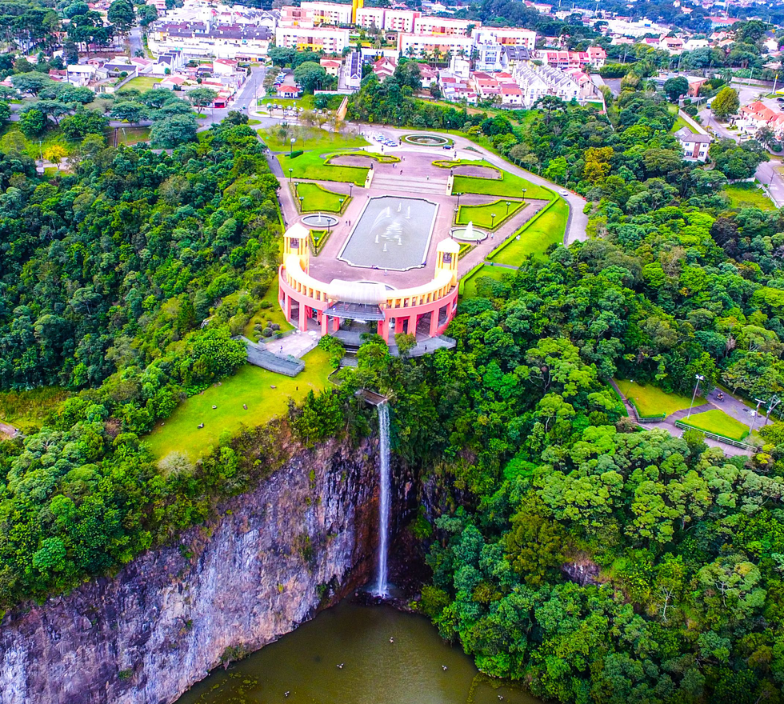
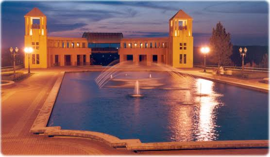
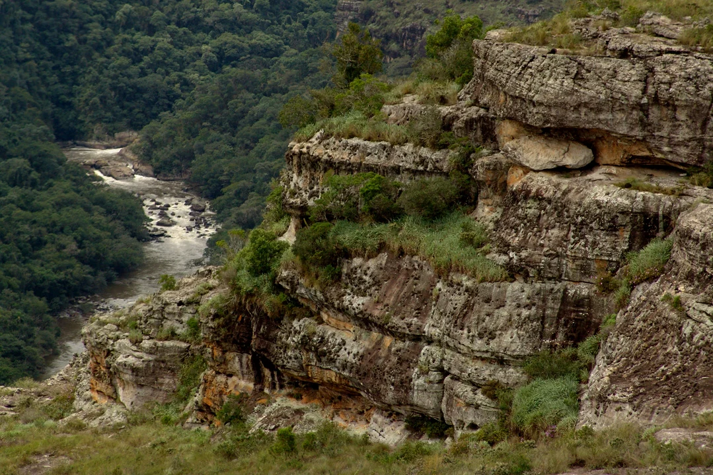

A História do Parque Tanguá
Bem-vindo ao portal oficial para explorar o Parque Tanguá, um dos cartões-postais mais fascinantes de Curitiba! Localizado em uma antiga pedreira reurbanizada, o parque é o maior símbolo do urbanismo sustentável do Paraná. Aqui você encontra todas as informações sobre o imponente mirante, o túnel escavado na rocha e o espelho d'água. Descubra os melhores pontos para contemplar o inesquecível pôr do sol e registrar fotos espetaculares. Acompanhe nossos guias com rotas de caminhada, áreas de descanso e opções para um passeio em família. Conheça a rica vegetação nativa com araucárias preservadas e a biodiversidade que habita a região. Planeje sua visita com dicas práticas sobre horários, acessibilidade, eventos e infraestrutura local. Embarque nesta experiência e venha vivenciar a perfeita harmonia entre a natureza e a cultura paranaense!

Detalhe do parque tangua
O Parque Tanguá é um dos maiores símbolos do urbanismo e da sustentabilidade no Paraná. Edificado sobre uma antiga pedreira desativada, ele materializa a capacidade de reinvenção do estado. O local integra a Bacia do Rio Barigui, valorizando a história dos recursos hídricos curitibanos. A preservação da Araucária no parque conecta a população ao maior ícone vegetal paranaense. Sua arquitetura marcante, com mirante e portal, transformou-se em um cartão-postal inconfundível. O famoso ritual de contemplar o pôr do sol promove um forte sentimento de pertencimento comunitário. Ele reflete a visão de planejamento urbano ecológico que projetou o estado mundialmente. Funciona como um espaço de convivência que une gerações em torno da cultura e da natureza. A reintegração da paisagem degradada demonstra o respeito paranaense ao patrimônio ambiental. Para os moradores, o parque vai além do turismo, sendo um refúgio de memória e orgulho local. O Tanguá sintetiza com perfeição a harmonia entre o desenvolvimento e a preservação no Paraná.

Curiosidades Sobre o Parque Tanguá
O Parque Tanguá foi construído sobre o terreno de duas antigas pedreiras desativadas nos anos 1970. O local conta com um túnel artificial de 45 metros de comprimento escavado na própria rocha. Uma impressionante cascata de 65 metros de altura despenca do paredão em direção ao lago. A área superior abriga o Jardim Poty Lazzarotto, feito no clássico e elegante estilo francês. Seu mirante oferece uma vista panorâmica onde muitos assistem ao pôr do sol mais famoso da cidade. O parque ocupa 235 mil m² e protege importantes nascentes e trechos da bacia do Rio Barigui. Foi quase transformado em uma usina de reciclagem de lixo antes de virar um parque em 1996. Abriga diversas espécies nativas, de árvores de araucária a animais como gambás, tatus e patos. A entrada é totalmente gratuita e o espaço conta com iluminação cênica para visitas noturnas.
